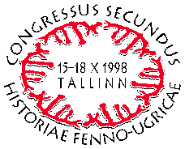

ABOUT SOME MORPHOLOGICAL FEATURES OF PROTO-URALIC
Prof. Ago Künnap, University of Tartu
General
Every scientific society loves its old traditional theories. Scientific paradigm changes itself from time to time. The change of scientific paradigm turns old traditional scientific theories to myths. The majority of scientists cannot believe that old scientific paradigms turn to myths. There are always some rebels in science. The paradigm of Uralistics is changing just now under the leadership of some Uralistic rebels. Their war against tradition is not Uralic-nationalistic: the paradigm of humanities is being changed by the Indo-European scientists, not by the Uralic ones. The Indo-Europists started it in the first place. The very first ideas concerning the Uralians as the first wave of migration that reached Northern Europe are proposed by the Indo-European archaeologists (Russian Pavel Dolukhanov in England, Czeck Miloslav Zvelebil in Czeckia and Cubinian Milton Nuñez in Finland). Quite a different thing is that this paradigm changes and the changes in scientific views of the rebels concerning the Uralistics are suitable for the new scientific identity of Hungarians, Estonians and Finns. It just so happened, it was not for nationalistic purposes.
Uralistics
Indo-European scientists are interested in the Uralistics, too. Uralists must help them in their work as they know more about Uralic languages, archaeology, history, physical anthropology, genetics etc.
Geneticists look at Finno-Ugrians as pure Europoids (Caucasoids) and Samoyeds as pure Mongoloids. Geneticists are strictly asking for our help. They say: we have a lot of genetic data but no idea how to work with these data. Give us such ideas, theories, hypotheses and we will check them. Geneticists cannot work with their databanks without concrete aims – databanks are so large that they overload the computers: the capacity of computers ends. Uralists must help them.
My main considerations
There was no narrow Uralic proto-home with a unitary Uralic proto-language, proto-race, proto-culture, proto-religion etc. in the east in the Volga or southern Ural area. There was a vast area of preglacial population in northern Europe from the Atlantic to the Ural Mountains. This population was the very first wave of spread of homo sapiens sapiens to Europe. This population could speak either relatively unitary Uralic languages or quite different languages. Groups of this population had linguistic and other contacts with each other in all respects.
If there were quite different languages these entered into a language union (Sprachbund) and by means of the intermediate lingua franca these different languages unified until a definite level but each one of them has preserved some features of the initial language. If there were only relatively unitary Uralic languages initially, they, too, have preserved some old features of their own.
When traditional Uralic linguists reconstruct their traditional Proto-Uralic language they may reconstruct, in the first case, only an incomplete, not a normally functioning, or a living, but only quite a poor intermediate lingua franca. The reconstruction Proto-Uralic, in the second case, looks a reasonable idea. Why not? And not dangerous for anybody. This reconstruction tries to base on the evidence of the contemporary Uralic languages.
But now a terrible mistake occurs. The traditional Uralists forget that the reconstructed Proto-Uralic is in both cases only a methodological tool and not a real language. They fetishize the Proto-Uralic and believe it has linguistic evidence. From this pseudo-evidence they begin to back-reconstruct the features and details of the real living contemporary Uralic languages.
The so-called back-reconstruction is the worst they can do. They say: in Proto-Uralic is the evidence of such and such a feature or detail. They say: if so then all the contemporary Uralic languages must have the traces of these Proto-Uralic features or details or they have been deleted later. Why must have, why deleted?! Here is really the place of a very serious and dangerous mistake! This is where science ends and a party game with conventional rules begins. And they call this game scientific investigation of the history of Uralic languages!
Uralic–Indo-European
There was no massive migration of Indo-European-languages-speaking population to north. There was only the so-called pioneer colonization of the Uralic-language- speaking area by Indo-European-language-speaking people. Northern Indo-European languages – Germanic, Baltic and Slavic – may be the result of a transition of Uralic or any other old Northern European-language-speaking population to an Indo-European language form. New speakers of the Indo-European language form spoke their new language poorly, with many phonetic and morphosyntactic mistakes. We can see these mistakes even today in the contemporary Germanic, Baltic and Slavic languages.
These mistakes or more exactly – phonetic and morphosyntactic substratum – remind us of Uralic phonetics and morphosyntax. Since today we have only the evidence of Germanic, Baltic and Slavic languages, on the one hand, and Uralic languages, on the other, we must compare this evidence with each other. We can not do any more!
Uralic – Siberian non-Uralic
There are very many common features between Uralic languages and non-Uralic Siberian languages. They occur especially between Siberian Uralic languages – Ob-Ugric and Samoyed – and the so-called Paleosiberian and Altaic languages. Part of these common features may be brought from Africa tens of thousands of years ago in parallel to Europe and to Asia, but the other part of these common features is the result of language contacts between Uralic and non-Uralic languages in Siberia.
But there is no reason to believe that all features of – for example – Samoyed languages existed once in the western Finno-Ugric languages, too. Or in the alleged Proto-Uralic. We must compare the evidence of Siberian Uralic and non-Uralic languages with each other very carefully, in every detail.
Some Morphological Features of Uralic Languages
*m - A c c u s a t i v e
In Finnic and Mordvin languages there is no m-accusative evidence (neither in Permic languages), the evidence occurs in Samoyed, Lapp and Mari languages and in some of the Mansi dialects. In Finnic the task to denote the total object was given to the n-genitive. The m-accusative of some Mansi dialects could be a result of the influence of Samoyed languages.
If we proceed from a widely spread supposition that the older Uralic sentence was nominal and of the type SOV then it is quite easy to imagine that earlier Finnish nominal sentences, containing the genitive *hän lehmä-n tappa-va 'he, slaughtering the cow' (the present tense) and *hän lehmä-n tappa-ja 'he, the slaughterer of the cow' (the preterite) when this sentence type was transmitted into SVO-type, became hän tappa-a lehmä-n 'he slaughters the cow' and hän tappo-i lehmä-n 'he slaughtered the cow'. So the n-genitive was changed into the case of the total object without supposing that the m-accusative without any Finnic evidence would have assimilated with the n-genitive due to the word final change -m > -n.
O r d e r C x + P x
In his presentation "Zur Morphotaktik und Morphosyntax der uralischen/finnisch-ugrischen Grundsprache", read at the plenary session of the VIII International Finno-Ugric Congress in Jyväskylä in 1995, Honti thoroughly analyses the mutual order of case and possessive suffixes in Uralic languages and he briefly concludes, "Die relative Abfolge der Kasus- und der Possessivsuffixe war höchstwahrscheinlich von der Natur der Kasussuffixe abhängig: die grammatischen Kasus traten hinter den Possessivsuffixen auf (PxCx), die nicht-grammatischen standen vor den Possessivsuffixen (CxPx)." (Honti 1995 : 78). To my judgement Honti considers this order typical of U/FU proto-language.
I have dealt with the mutual case and possessive suffixes in Uralic languages in my article "On Some Similarities between Finnic–Lapp and Samoyed Languages", regarding CxPx as one of the twelve similarities between the languages mentioned in the title (Künnap 1996).
The sequence PxCx has no proper evidence in Finnic. If we abandon our speculations about the imaginary Proto-Uralic, I fail to see any reason for the supposition that any other sequence than CxPx should ever have occurred in the Finnic (and Lapp) declination paradigm. The original order in the Samoyed declination paradigm is also CxPx. Bearing these facts in mind, I have indicated the co-occurrence of Finnic–Lapp–Samoyed in case of the sequence CxPx. The mutual sequence of case suffixes and possessive suffixes of other Uralic languages is a different problem and requires separate observation. I would only mention in advance that contacts with Turkic languages can by no means be excluded there. (See closer in Künnap 1998a.)
Similarities between East-Uralic and Siberian Non-Uralic Languages
O b - U g r i c – S a m o y e d *\ - P r e t e r i t e
The use of the supposed *\-preterite in Uralic is very sporadic. If we leave aside its use in the negative auxiliary verb we could conclude that it is used only in Mordvin, Mari, Mansi, Khanty, Nenets, Enets, Nganasan and Selkup. At that in Mordvin preterite suffix *\ is used only in the 3rd person singular and plural. In Mari it is still not quite clear whether it is *\-preterite suffix or the 3rd person’s generalized personal suffix. In Nenets and Enets its use is limited to interrogative sentences, in addition to which in Nenets *\-forms have modal shades of meaning.
In the negative auxiliary verb the supposed *\-preterite is used only in Estonian, Livonian, Lapp, Mordvin, Mari, Nenets, Enets and Nganasan. In Estonian the *\-preterite suffix is used for all three persons only in Kodavere subdialect of the eastern dialect but in widespread southern dialects only the particle es is used to form the negative preterite for all three persons. In Lapp ^^ < *n? is used instead of the preterite suffix *\ in the negative auxiliary verb, the former being used only in Swedish-Lapp dialects. *n? would require proceeding from the archetype *n\. In case of the negative auxiliary verb in Mari we encounter the same uncertainty as in case of the main verb.
We face the problem whether in Uralic the recession of the generally used *\-preterite has taken place or whether we are concerned with its different scope of development in different languages.
At present I am of the opinion that the *\-preterite is a phenomenon, limited to Ob-Ugric and Samoyed languages, which can also extend to Mordvin. Finnic and Lapp (just as Mari, Udmurt, Komi and Hungarian) have never known any Proto-Uralic *\-preterite, not even in case of the negative auxiliary verb.
Taking into account the fact that the *\-preterite, typical of Samoyed, Ob-Ugric and Mordvin, may have equivalents in Paleo-Siberian languages, then, based on the above considerations, there is every reason to regard the *\-preterite as a phenomenon, related to the Siberian language area, first and foremost, which has never been known in Finnic, Lapp, Mari, Permic and Hungarian. (See closer in Künnap 1998b.)
O b - U g r i c – S a m o y e d *k - P r e s e n s
Here I would briefly consider the occurrence of the *k-present tense in Uralic languages in general. I would say it is most sporadic. First of all we have to discriminate really existing evidence from an imagined one. The imagined evidence, I’d say, the dreamt-of material is abundant. All the “back-reconstructions” of the present-tense forms á la *tule-k-mek (Finnish tulemme) 'we come' is only a fantasy without the least evidence. What I bear in mind is more narrowly the present-tense conjugation paradigm of the indicative mood, not of the imperative or a negation form or something of the kind. In this sense a genuine evidence can be found in Ob-Ugric languages, e.g. in Mansi totE-QE-m 'I carry', totE-Q+·-n 'you carry' etc. The evidence of the *k of the present tense is completely lacking in Samoyed languages, there is *q instead. If the Samoyed general *q of the aorist can be observed as a definite equivalent to Finno-Ugric *k of the present tense, we could speak only about an Ob-Ugric–Samoyed evidence, to which the Permic-Volgaic evidence in the negative auxiliary is added. Such a distribution makes the occurrence of the PU *k of the present tense as evidence in the indicative conjugation paradigm of the negative auxiliary of Permic-Volgaic languages very debatable, as I see it. (See closer in Künnap 1998b.)
O b - U g r i c – S a m o y e d *k - D u a l
The possibility of non-existence of the *k-dual traces in Hungarian has been taken into account many a time, though at least the traces are not entirely clear or definite. There is no reliable basis to assume that *k-dual was used in all Proto-Uralic and that later it disappeared from the majority of Uralic languages. I have restricted the clearly obvious sphere of occurrence of the old *k-dual in Uralic languages sphere to the merely easternmost Uralic languages in the neighbourhood of Paleo-Siberian although not immediately in the neighbourhood of those using k as those are farther away – Eskimo, Aleut and Gilyak (Pusztay 1980 : 51). But still, there they are. (See closer in Künnap 1985.)
S a m o y e d *q - A o r i s t / I m p e r a t i v e
There is nothing left to suppose that in Samoyed languages the aorist/imperative marker *-qa- has proceeded from a Proto-Samoyed *q-type marker of the verbal noun. Strictly speaking, in the given case it can be regarded as the transition of the verbal noun marker into the marker of aorist/imperative since the actual verbal noun use is not observable any more.
Naturally, a question arises if there are any equivalents to the verbal suffix *q of Samoyed languages in their neighbouring non-Uralic language families. Turkic languages know the second person imperative marker -q. Here we may simply come across a more general marker of the second person. It should also be mentioned that -a- seems to be an old present/future and optative marker of Turkic languages. In Yenisey languages q occurs in a number of verb forms, among others, in the present tense and the imperative mood without obviously being a specific marker of the latter. In the Tungus-Manchu family of languages the Evenk -qa- expresses a further future, the suffix -qná- indicates some further adhortative, e.g. ana-qná-m ‘I will push (later)’ (Jazyki 1968 : 79–80). The Even language has an optative with the suffix -qa-, -qa-, -qe- is a final component of a potential participle suffix. In Koryak of the Chukchi-Kamchatkan family of languages -q- is one of the suffixes for the present/future and for expressing recommendatory action. A similar -q- can also be found in the future tense of Alyutor and Kerek, in the latter in the present tense, too. (See closer in Künnap 1994.)
S o u t h - S a m o y e d *l - l a t i v e
The comparison of the South Samoyed l-lative with the locative-lative (more exactly with adessive-allative) (suffix -lV) of a neighbouring language, viz. of Evenk (Tungus) belonging to the Tungus-Manchu language family, is of a particular interest. The similar phenomenon can also be met in the Even language belonging to the language family mentioned above. (See closer in Künnap 1995.)
S o u t h - S a m o y e d *l - g e r u n d
Taking a look around among non-Uralic Siberian languages it is intriguing to compare the South Samoyed l-gerunds with the l-gerund expressing the purpose of an action in the languages of the Mongol language family, such as Mongor (the suffix -la), Baoan (the suffix -le) and Dongxiang (the suffix -le). The usages of l-suffixes in Uralic and the so-called Altaic languages have generally much in common, first of all in forming as denominal nouns, denominal verbs as well as deverbal verbs. Turkic languages have similar gerunds of compound suffixes whereby the final l-component, coalescing with the suffixes of verbal nouns, is supposed to be the suffix of the comitative case. It is worth mentioning that also the gerundial suffix -lu-, -l+- in Eskimo and -l in Aleut are used. (See closer in Künnap 1995.)
References
Honti, L. 1995, Zur Morphotaktik und Morphosyntax der uralischen/finnisch-ugrischen Grundsprache. – CIFU VIII. Pars I, p. 53–82.
Künnap, A. 1985, Uurali keelte kaksusest. – Läänemeresoomlastest neenetsiteni. Uurimusi ja memuaare, Tallinn, p. 56–59.
Künnap, A. 1994, Two Suffixes of Finite Verb Forms in Samoyed: q and ð. – A. K ü n n a p (ed.), Minor Uralic Languages: Structure and Development, Tartu–Groningen, p. 88–112.
Künnap, A. 1996, On Some Similarities Between Finnic–Lapp and Samoyed Languages. – A. K ü n n a p (ed.), Fenno-Ugristica 20. Uralic Languages in European and Siberian Linguistic Context, Tartu, p. 65–72.
Künnap, A. 1998a, On the original order of case and possessive suffixes in Uralic. – Oekeeta asijoo. Commenationes Fenno-Ugricae in honorem Seppo Suhonen sexagenarii, Helsinki (= MSFOu 228), p. 265–267.
Künnap, A. 1998b, On the Uralic *\-Preterite and *k-Present. – LU XXXIV, p. 81–86.
Pusztay, J. 1980, Az uráli-paleoszibériai kapcsolatok kérdésehez, Budapest (= A Magyar Nyelvtudományi Társaság Kiadványai 158).
A b b r e v i a t i o n s
CIFU VIII = Congressus Octavus Internationalis Fenno-Ugristarum I–II, Jyväskylä 1995; III–VIII, Jyväskylä 1996.
LU = Linguistica Uralica XXVI–, Tallinn 1990– (continuation of SFU).